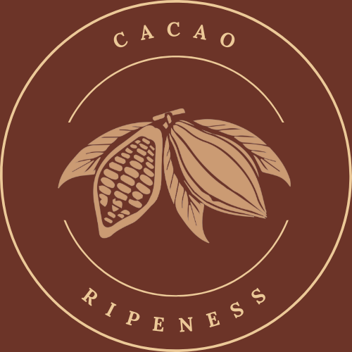

<nav class="navbar navbar_logeado" id="navbar_logeado">
    <div class="container-fluid d-block py-3">
        <div class="contenido_navbar px-4">
            <div class="logo">
                <a class="navbar-brand m-0" routerLink="/panel-inicio">
                    
                </a>
            </div>

            <div class="cerrar_sesion">
                <i class="bi bi-box-arrow-right" (click)="authServices.Confirmarlogout();"></i>
            </div>
        </div>
    </div>
</nav>
